Elastic SIEM 簡介
這篇文章會分享 Elastic SIEM 簡介與 UI 功能介紹，Elastic 提供了一套免費基於 Elastic Stack 的 Elastic SIEM，在安全性資訊與事件管理上，以第一次接觸這類工具的前端工程師來說，覺得應該算是免費又好用的工具吧?
Elastic 提供了一套免費基於 Elastic Stack 的 Elastic SIEM，一套 SIEM 主要結合了:
- SIM (security information management)
- SEM (security event management)
那一套完整的 Elastic Stack 版本的 SIEM 需要包含以下元件，有少當然還是可以跑只是資訊跟功能就不那麼完整。
- Elastic Endpoint Security: 回傳端點威脅預防、偵測、回應相關的事件跟警告
- Beats: 透過 Beats 蒐集各種相關的安全資訊
- Elasticsearch: 即時、分散式儲存、全文檢索引擎、資料分析
- Kibana: Elasticsearch 的 GUI 管理介面
選配的元件或功能
- 機器學習
- 告警
- Canvas
Elastic SIEM 系統架構
來源: https://www.elastic.co/guide/en/siem/guide/current/images/siem-architecture.png

SIEM 資料流程
SIEM 會從各式來源擷取與分析資料，來源涵蓋了 Elastic Endpoint Security、Beats、APM transactions 或是任何只要能夠符合 ECS 規格的資料，最後都會將各式資訊彙整成同樣的 schema 存入 Elasticsearch，方便集中管理、分析、聚合相關的事件，這樣不管是要資料分析或是做機器學習都更加方便。
SIEM 會從各式來源擷取與分析資料
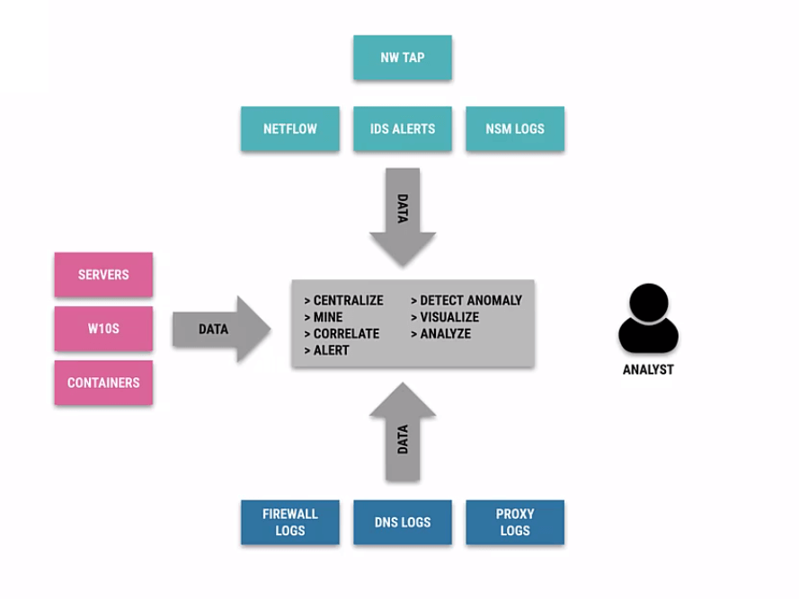
來源: https://learn.elastic.co/
ECS 規格會定義相關需要的欄位
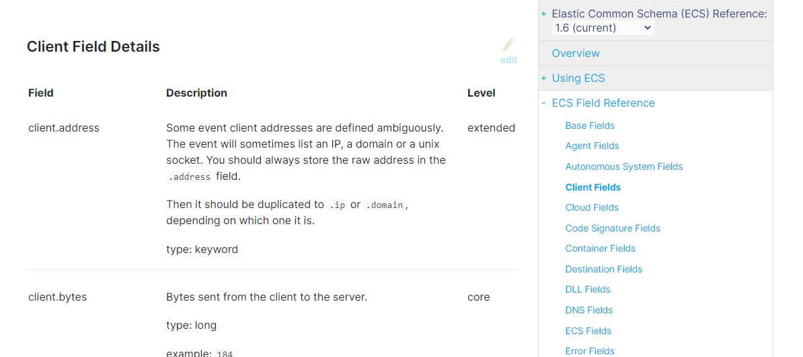
將各式資訊彙整成同樣的 schema 存入 Elasticsearch
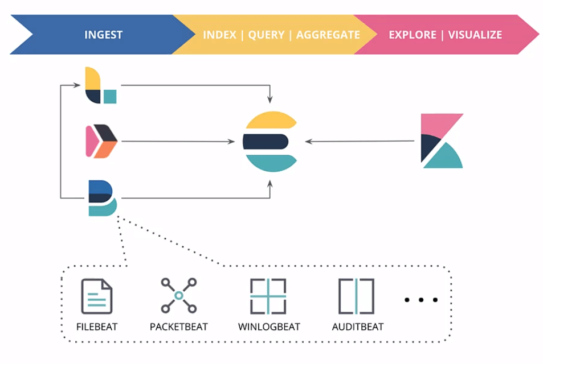
來源: https://learn.elastic.co/
SIEM 資料來源
資料來源雖然涵蓋了很多部分，但資料彙整後主要歸類成主機相關、網路相關兩大類，使用上原則上就是照著提示進行安裝和啟用，安裝完成後要確認一下是不是真的有出現在 kibana 介面中即可。
- 主機相關
- Auditbeat
- System module
- packages
- processes
- logins
- sockets
- users and groups
- Audit module: linux kernel
- System module
- Filebeat
- system logs (linux)
- santa (mac)
- Winlogbeat
- Windows event logs
- Auditbeat
- 網路相關
- Packetbeat
- 流量
- DNS
- Filebeat
- 網路層相關軟硬體的 log
- Packetbeat
elastic-agent-7.9.1-windows-x86_64 設置並啟用後在 Ingest Manager 中會看到已經上線
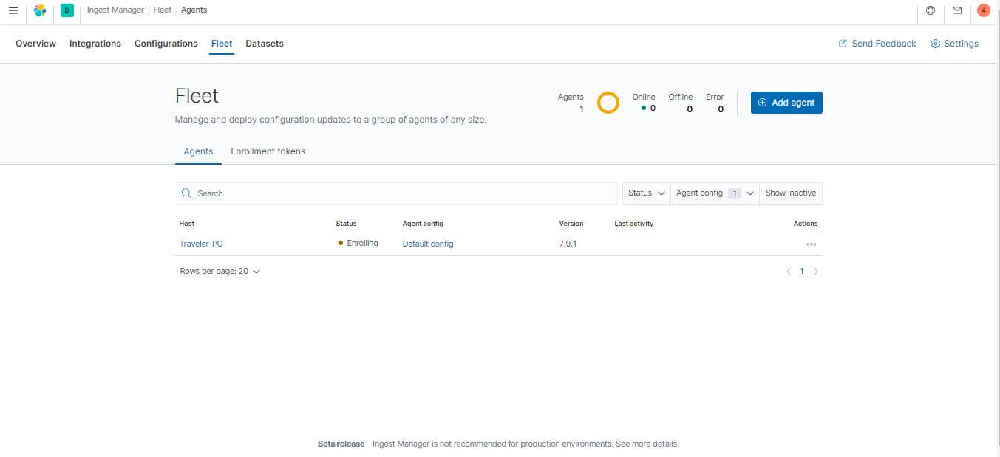
SIEM 操作介面
SIEM 的操作介面一樣是長在 kibana 裡面的 Security，減少了我們跟艱澀資料互動的複雜度，介面竟然還支援拖拉設定極複雜的條件設定查詢，打開 Security 後主要會看到搜尋的介面跟幾個 Tab。
- 搜尋介面
- KQL(Kibana Query Language): 可以看成 kibana 的 SQL
- 範例:
response:200 and extension:php
- 範例:
- filter: 過濾條件提供存檔跟訂選
- 搜尋條件存檔
- KQL(Kibana Query Language): 可以看成 kibana 的 SQL
- Overview Tab
- Alerts Trend: 相關觸發規則
- External alerts count
- Events count
- Host and network events
- Detections Tab
- 因為我的電腦沒中毒或執行奇怪程式所以都不會有紀錄
- Host Tab
- 主機相關資料: Auditbeat、Winlogbeat
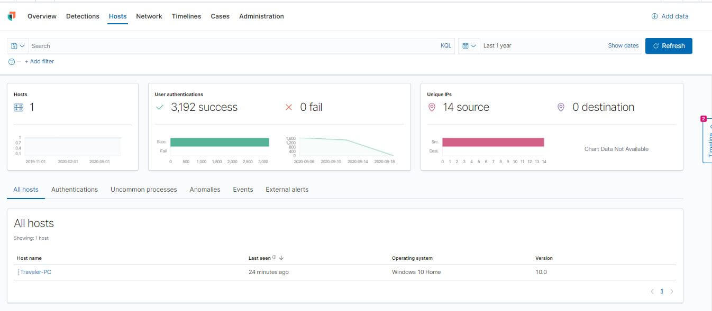
- 主機相關資料: Auditbeat、Winlogbeat
- Network Tab
- 網路相關資料: Packetbeat + Filebeat
- 發現有提供 GeoIP 的支援
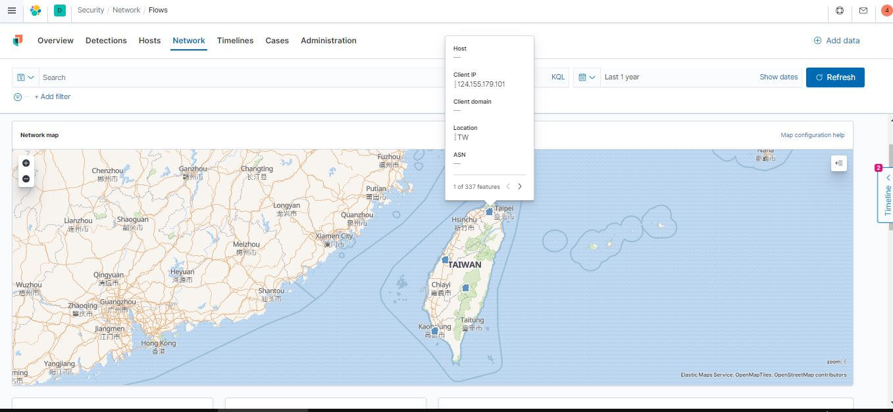
- Timelines Tab
- 設定檢索的區間、也提供相關 filter 的建立
- 筆電平常都只有用 Chrome 上網，所以我用
Traveler-PC+chrome.exe相關關鍵字就可以篩出相關事件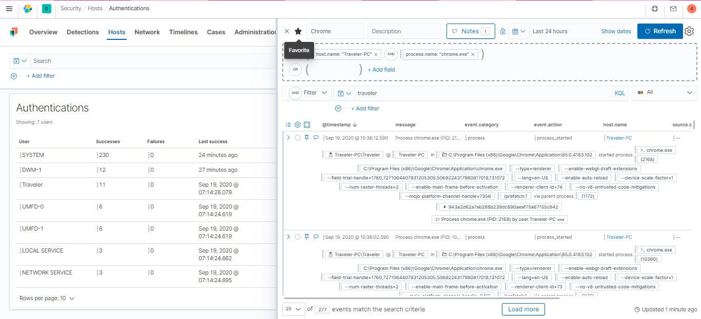
剛剛做了 Elastic SIEM 簡介與 UI 功能介紹，接下來會更深入了解相關概念以及看看 SIEM 究竟能夠幫我們解決什麼問題，還有 SIEM 中的機器學習是怎麼一回事。
Elastic SIEM 透過分析儲存在 Elasticsearch 中規格符合 ECS 的資料，可能可以幫助我們解答
- 偵測系統發生異常
- 實體機最近硬碟快滿了，最晚什麼時候一定要處理?
為什麼資料格式一致 (符合 ECS) 很重要?
- 在資料探勘或機器學習中，資料乾淨成效較佳
- 資料不一致會造成閱讀和理解上困難，像是怎麼知道是 12/24 時制?
SIEM 中的資料
雖然之前介紹了各式各樣的指標或日誌資料，但對系統來說主要還是分成兩大塊，不要問為什麼分兩大塊，這就跟為什麼要分成動物跟植物兩類一樣，其實是透過資料的特性自動分出來的。
- 主機相關
- Auditbeat、Winlogbeat 較適合蒐集主機相關資料
- 網路相關
- Packetbeat、Filebeat 較適合蒐集網路相關資料
怎麼取資料回 SIEM?
- ECS 定義了共同的欄位
- 所有的 Beats 回傳的資料都會符合 ECS
- 相關分類與適用的 Beat 如下圖
資料決策樹
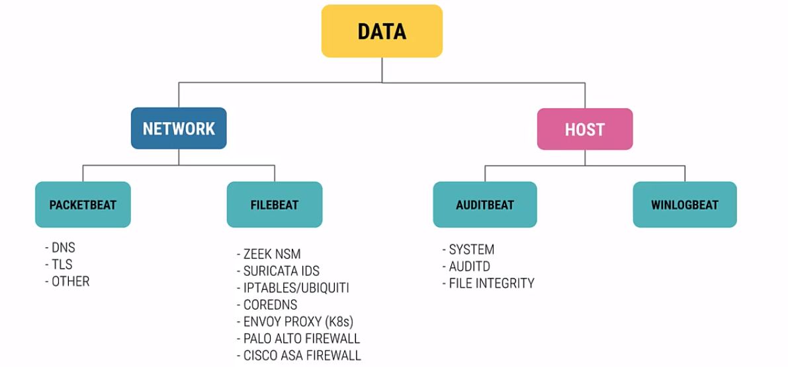
ECS
ECS 定義了一系列的欄位，當 logs 或是 metrics 的事件資料需要存入 Elasticsearch 都需要確認符合，反過來說任何 Elastic Beats 只要傳輸符合 ECS 規格的資料，都可以存到 Elasticsearch，其中有個重要的事情是每筆事件都需要包含一個 timestamp。
ECS 規格中有個比較特別是 Geo 的格式，其他相關的也可以從 ECS 文件中或是 ECS Github 中查詢相關規格，因為小編最早開始是在 GIS 公司服務，每次遇到地理資訊類訊息都會特別注意一下，Elasticsearch 主要是透過 GeoIP Processor 把 IP Address 轉成經緯度地理位置，利用 Maxmind Geolite2 的數據去核對 IP Address 與地理訊息，當然我們也可以不自己架設，純前端的話也可以透過 geojs 的服務達到就是了。
透過這個 ECS，就可以做到類似 GA 的分析
因為目前沒有真實資料，就先截 GA 的圖給大家看
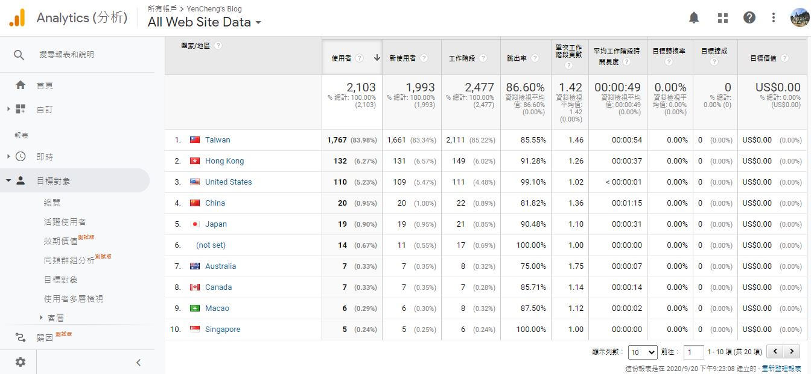
異常偵測
因為 Elastic 儲存的資料理論上都應該帶有 timestamp，所以異常偵測可以透過把時間序列的資料加上一個正常行為的基準參考值去偵測不正常的 patterns。
發現異常點並標註
圖片來源: https://www.elastic.co/guide/en/machine-learning/current/ml-overview.html

Elastic 機器學習
既然資料都規格一致了，Elastic SIEM 當然內建了針對異常偵測的機器學習功能，會透過 Elasticsearch 中儲存的資料自動幫我們偵測主機和網路相關的異常，如果資料能夠有 pattern 甚至可以做到預測未來，像是知道主機的硬碟什麼時候可能會用滿等等。
要幾分鐘入門資料探勘或機器學習概念的話，建議去載個 Weka 然後搭配每個上過資料探勘都會用到的動物園資料，接著照著各式教學你就可以得到下圖，網路上教學非常多，這邊就不贅述，而且最困難的通常是第一個步驟也就是要整理資料，像是補缺項、過濾不符合規格的值等等，這個部分都透過 ECS 的定義解決了。
照著各式教學你就可以得到下圖
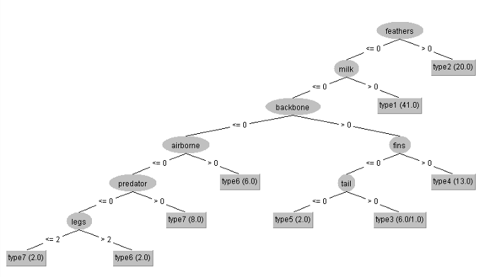
我們就會發現，這不就類似剛剛說的 SIEM 中的資料主要分成兩大塊，其實更細節的分類決策樹如下:
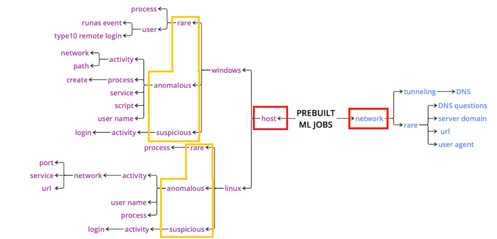
機器學習中有個經典的概念，就是什麼樣的事情是可以預測的，答案就是只要能夠有 Pattern 就可以預測，像是小孩為什麼會哭女朋友為什麼會生氣，這兩個顯然都沒有? 遇到這類沒有 Pattern 的問題，只要先努力展現求生意識就對了? 但如果是晴天、雨天、平日、假日的停車格數量就可能會有，也比較有機會能夠做到預知未來。
預測未來
圖片來源: https://www.elastic.co/guide/en/machine-learning/current/ml-overview.html

Elastic Security
Elastic 的系統安全 = SIEM + ECR，提供了
- 一套能夠辨識出攻擊還有系統錯誤的引擎
- 一個分流和整合相關資訊的工作區
- 提供將事件過程與關係變成可互動、視覺化的介面
- 案例管理和自動操作
- 使用內建的機器學習功能去偵測系統異常和攻擊
喜歡這篇文章，請幫忙拍拍手喔 🤣